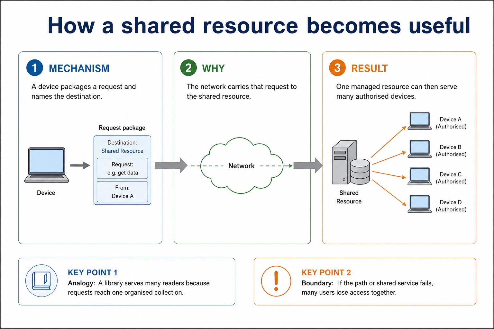

Quick route
Use the diagnostic, learning objectives, first worked example and foundation question. Stop once the learner can explain the central distinction accurately.
Cambridge AS9618 | Paper 1 | Section 2: Communication
Flexible-depth lesson
S2.01, S2.02, S2.03 | Visual relationships, mechanisms and worked examples.
Part 1 | optional depth
Recall S2.02 before starting this lesson.
Give one accurate definition or method step before continuing. If it is missing, revisit only that prerequisite.
Part 2 | explicit teaching
Complete the default-visible explanation and worked example before using the visual recap.
S2.01 · comparison
Networking devices allow computers and users to share resources such as files, printers, storage and an internet connection. A network can also support communication, collaboration, central account management, central backup and access to shared services. A benefit must identify what is shared or managed and explain the consequence; 'it is easier' is not enough.
In a client-server model, clients request services or resources and one or more servers provide them. Dedicated server roles can include authentication, file storage, web hosting and backup. Central management, consistent access control and central backup are benefits; server cost, specialist administration, dependence on the server and a possible central failure are drawbacks.
A LAN covers a limited geographical area such as one building or site and is normally owned or managed by one organisation. A WAN covers a large geographical area, connects separate LANs or sites and commonly uses telecommunications-provider infrastructure. LAN and WAN describe scope and management, not a guaranteed speed.
Evidence must cover the different computer roles in each model, balanced benefits and drawbacks, and a scenario-linked choice; a topology cannot substitute for a network model.
A WAN covers a large geographical area, connects separate LANs or sites and commonly uses telecommunications-provider infrastructure.
The purpose and benefits of networking devices and the characteristics of LANs and WANs.
Networking devices allow computers and users to share resources such as files, printers, storage and an internet connection.
A network can also support communication, collaboration, central account management, central backup and access to shared services.
A benefit must identify what is shared or managed and explain the consequence;
Networking devices allow computers and users to share resources such as files, printers, storage and an internet connection.
A network can also support communication, collaboration, central account management, central backup and access to shared services.
A benefit must identify what is shared or managed and explain the consequence;
Choose a topology for a two-building clinic / Choose a model and client type for a school examination room: Use a star LAN inside each building so individual devices have independent links to a central switch.
Show the following targets in one connected answer, using a concrete example for each: networking devices; benefits; LAN; WAN; limited geographical area; large geographical area.
Use these cards and diagrams to reinforce the explanation above; they are not a substitute for it.
Networking devices allow computers and users to share resources such as files, printers, storage and an internet connection.
A network can also support communication, collaboration, central account management, central backup and access to shared services.
A benefit must identify what is shared or managed and explain the consequence;
Diagram · 1 of 1

Show understanding of the purpose and benefits of networking devices and the characteristics of LANs and WANs.
A LAN covers a limited area and is normally managed by one organisation; a WAN connects sites across a large area and commonly uses provider infrastructure. Benefits must identify a shared or centrally managed resource and its consequence.
S2.02 · comparison
In a client-server model, clients request services or resources and one or more servers provide them. Dedicated server roles can include authentication, file storage, web hosting and backup. Central management, consistent access control and central backup are benefits; server cost, specialist administration, dependence on the server and a possible central failure are drawbacks.
In a peer-to-peer model, each peer may request and provide resources directly. It can be inexpensive and simple for a small trusted group because no dedicated server is required, but distributed accounts, backups, security and availability become harder to control. A model choice must be justified from number of users, trust, management, availability, cost and the required shared services.
Topology choice must be justified from packet path, failure effect, redundancy, cabling cost, expansion and traffic. A star isolates most individual cable faults but the central switch is a single point of failure; a mesh offers alternative paths but needs more links and management; a bus uses less cable but the shared backbone and shared traffic are weaknesses.
A LAN covers a limited area and is normally managed by one organisation; a WAN connects sites across a large area and commonly uses provider infrastructure. Benefits must identify a shared or centrally managed resource and its consequence.
Thin/thick describes where processing, software and storage reside; it must not be treated as a synonym for client-server/peer-to-peer.
Client-server and peer-to-peer models, their computer roles, benefits and drawbacks, and justify a model for a given situation.
In a client-server model, clients request services or resources and one or more servers provide them.
Dedicated server roles can include authentication, file storage, web hosting and backup.
Central management, consistent access control and central backup are benefits;
In a client-server model, clients request services or resources and one or more servers provide them.
Dedicated server roles can include authentication, file storage, web hosting and backup.
Central management, consistent access control and central backup are benefits;
Use a client-server model so accounts, permissions, exam files and backups are controlled by servers.
Explain the following targets in one connected answer, using a concrete example for each: client-server; peer-to-peer; clients request; servers provide; benefits; drawbacks; justified.
Use these cards and diagrams to reinforce the explanation above; they are not a substitute for it.
In a client-server model, clients request services or resources and one or more servers provide them.
Dedicated server roles can include authentication, file storage, web hosting and backup.
Central management, consistent access control and central backup are benefits;
Comparison · 1 of 1

Explain client-server and peer-to-peer models, their computer roles, benefits and drawbacks, and justify a model for a given situation.
Evidence must cover the different computer roles in each model, balanced benefits and drawbacks, and a scenario-linked choice; a topology cannot substitute for a network model.
S2.03 · comparison
A thin client relies mainly on a server for processing and/or storage. A thick client performs more processing locally and normally stores more software or data on the client device. Thin clients simplify central updates and can use lower-specification hardware, but depend heavily on the server and network. Thick clients can continue more work when disconnected, but local installation, security and maintenance are distributed.
A thick client performs more processing locally and normally stores more software or data on the client device.
A thin client relies mainly on a server for processing and/or storage.
Thin-client and thick-client computers and the differences between them.
A thin client relies mainly on a server for processing and/or storage.
A thick client performs more processing locally and normally stores more software or data on the client device.
Thin clients simplify central updates and can use lower-specification hardware, but depend heavily on the server and network.
A thin client relies mainly on a server for processing and/or storage.
A thick client performs more processing locally and normally stores more software or data on the client device.
Thin clients simplify central updates and can use lower-specification hardware, but depend heavily on the server and network.
Thin clients support central software management and reduce local storage, but the school must provide resilient servers and networking because a failure can stop the room. Thick clients would reduce that dependence but distribute software and security maintenance.
Show the following targets in one connected answer, using a concrete example for each: thin client; thick client; server processing / server for processing; local processing / processing locally.
Use these cards and diagrams to reinforce the explanation above; they are not a substitute for it.
A thin client relies mainly on a server for processing and/or storage.
A thick client performs more processing locally and normally stores more software or data on the client device.
Thin clients simplify central updates and can use lower-specification hardware, but depend heavily on the server and network.
Show understanding of thin-client and thick-client computers and the differences between them.
Thin/thick describes where processing, software and storage reside; it must not be treated as a synonym for client-server/peer-to-peer.
Part 3 | select by learner need
Question 1. A college is replacing one shared bus network with star LANs connected into a hybrid topology. Explain two networking benefits and justify the topology change. A call centre is choosing a client-server model with thin clients. Explain two benefits and two drawbacks of this combined choice.
Answer: one developed resource-sharing, communication or central-management benefit; a second distinct developed networking benefit; star frames pass through a central switch and an individual cable failure normally affects one device; hybrid combines topology patterns / connects the star segments; justification links reliability, expansion, traffic or cost to the college; centralised accounts/software/update or data management; lower client hardware/storage requirement; depends on network/server availability or performance; server infrastructure, administration or central-failure cost; develops at least one point in the call-centre context
Marking guidance: Do not award generic benefits or a topology name without a path/failure consequence. Do not award 'cheaper' unless the lower client specification or central administration explains why; do not confuse network model with topology.
Common error: For the command word explain, perform that exact action; do not replace it with an unrelated fact.
Question 2. Compare a LAN from a WAN using geographical scope and management.
Answer: A LAN covers a limited site and is normally managed by one organisation; a WAN connects sites over a large area and often uses provider infrastructure.
Marking guidance: Award one mark for each distinct, technically accurate point or method step.
Common error: Do not repeat the same point in different words; each mark needs a separate idea or method step.
Question 3. State the roles of a client and server.
Answer: A client requests a service or resource; a server provides and manages the service or resource.
Marking guidance: Award one mark for each distinct, technically accurate point or method step.
Common error: Do not copy the worked example unchanged; transfer the method and check it against the new context.
| Reference | Marks | Command word | Question type |
|---|---|---|---|
| 9618/12/S/25 Q6(c) | 6 | complete | recall |
| 9618/12/S/25 Q6(b) | 4 | explain | explain |
| 9618/12/S/25 Q6(e) | 3 | complete | recall |
| 9618/12/S/25 Q6(a) | 2 | state | recall |
Index only: Cambridge question and mark-scheme wording is not reproduced on this public course page.
Part 4 | close when ready
Students often confuse bandwidth with speed in every sense. Correction: bandwidth is capacity; latency and congestion also affect perceived performance.